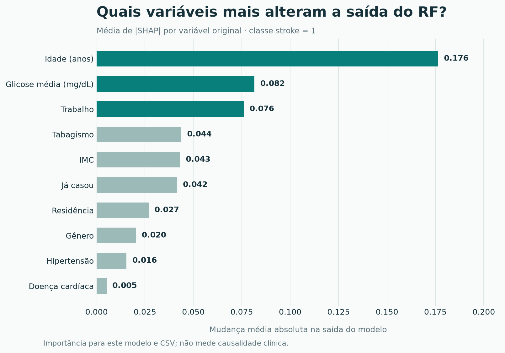
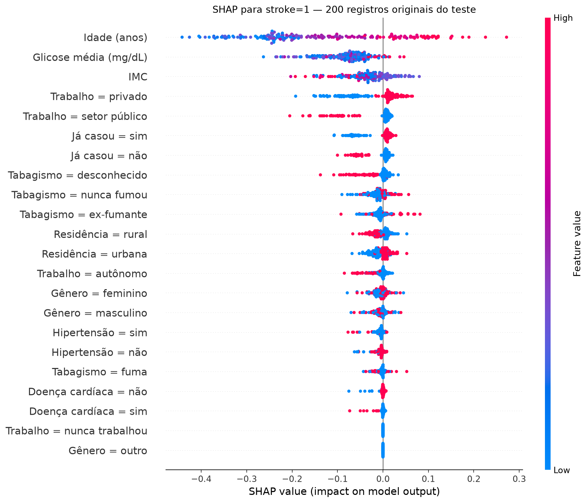

PROJETO ACADÊMICO · RANDOM FOREST + SHAP
O que influenciou a previsão neste modelo?
Uma leitura visual das previsões feitas com o CSV do projeto. Escolha um registro real do teste e veja como cada dado alterou a saída do Random Forest para stroke=1.
COORTE ADULTA4.194registros no CSV disponível
TESTE INTOCADO83949 com
stroke=1As explicações mostram o comportamento do modelo, não uma estimativa clínica de risco futuro.
01 / DESEMPENHO
O teste revela a dificuldade de encontrar AVC.
O conjunto de teste manteve a distribuição original. Precisão, recall e F1 abaixo se referem à classe positiva; uma acurácia isolada esconderia muitos casos não identificados.
Protocolo: divisão estratificada 80/20 → imputação e SMOTENC apenas no treino → codificação → RF com 200 árvores. Leia a análise completa.
02 / EXPLICAÇÃO GLOBAL
Quais entradas mais mudaram as previsões?
A importância agrega as categorias da mesma variável por pessoa. A visualização de dispersão mostra quanto e em que direção cada entrada codificada contribuiu em 200 pessoas originais do teste.


03 / EXPLICAÇÃO INDIVIDUAL
Escolha um caso. Depois, um dado clínico.
São dez registros originais do teste, com acertos e erros. Cada contribuição SHAP foi calculada para o mesmo RF e somada por variável original. Selecione uma entrada para ver seu efeito nesta previsão específica.
Carregando explicações...
04 / LEITURA RESPONSÁVEL
SHAP explica a saída. Não valida o uso clínico.
O alvo registra histórico de AVC no CSV, sem acompanhamento temporal demonstrado. As saídas do RF treinado com SMOTENC não foram calibradas; 98% na interface não significa 98% de risco futuro.
Hipertensão e doença cardíaca tiveram contribuições menores neste RF, embora sejam fatores reconhecidos pelo CDC. O ranking depende dos dados, das variáveis e do modelo. A documentação discute as inconsistências com o artigo e a procedência do CSV.